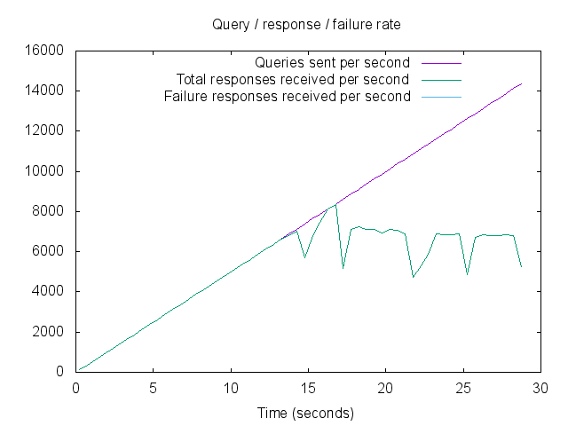
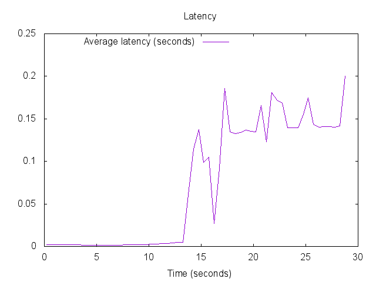
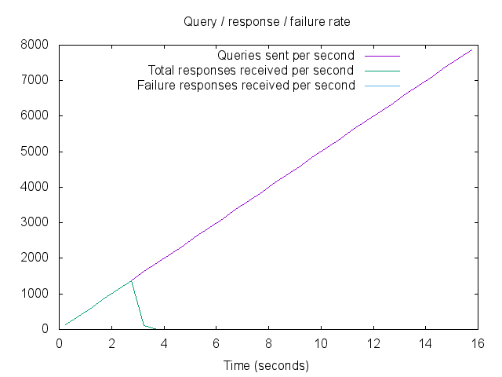
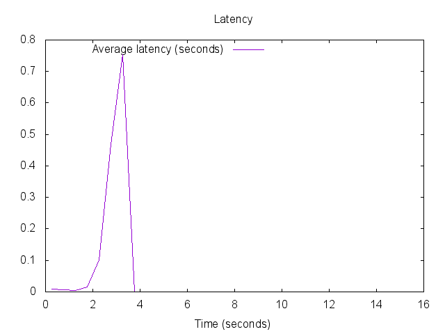

動機
Raspberry PiでつくるDNS キャッシュサーバ という記事 を読んで、自分もRasberry Pi で、NDJBDNS キャッシュサーバーを作っているので、ストレス テストを実施してみようと思った。
目的
- Rasberry Pi2 で作った、NDJBDNS キャッシュサーバーのストレステスト
- Mac OS X からストレス付与出来るようにする。
Install 手順
前提条件
このインストール手順は、Mac OS X Yosemite の場合についてです。
dnsperf / resperf の Install
以下のコマンドをターミナルで実行する。
% ruby -e "$(curl -fsSL https://raw.githubusercontent.com/Homebrew/install/master/install)" < /dev/null 2> /dev/null
% brew install dnsperf
gunplot の install
resperf の実行結果レポートを作成する resperf-report コマンドで使用する
gunplot をインストールする。
AquaTerm、X11のインストール
gunplot で利用する出力先ターミナルを事前にインストールする。
AquaTerm のインストール
AquaTermのダウンロードページ から、インストーラーをダウンロードしインストールする。
X11 のインストール
Mac用の X11ライブラリ XQuartz のダウンロードページ から、インストーラーをダウンロードして胃インストールする。
gunplot のインストール
以下のオプションを付与したコマンドでインストールする。
% brew install gnuplot --with-aquaterm --with-x11
ストレステスト
ストレスツールのインストールが完了したので、目的であるRasberry Pi2 の DNS キャッシュサーバーへストレステストを行う。
dnsperf と resperf それぞれの特徴について
dnsperf と、resperf はそれぞれ以下の特徴がある。
-
dnsperf
- 権威サーバや、LAN環境でのキャッシュサーバのテストではO.K.
-
キャッシュのテストでWAN回線を使用した場合は結果が不十分になる可能性あり
レスポンス状況でdnsperfの出す負荷(qps)が変化するため
-
resperf
-
レスポンス状態にかかわらず負荷を上げていくことができる
したがって、テスト時にWAN環境の影響を受けにくい
-
今回はLAN環境のDNSキャッシュサーバーのストレステストだが、レスポンス状態に関わら
ず負荷をあげたい為、 resperf を用いる。
事前準備
事前準備として、ストレステストで用いるクエリファイルを作成する。
クエリファイルの書式は、queryperf と同じ書式で以下の様に記載する。
domain type
サンプルは以下の通り。 試験の為に対象レコードは 100,000 規模で作成する。
example.com a
example.com soa
example.com ns
example.com mx
dnsperf で提供しているサンプルは以下にて取得可能。レコードは、 10,000,000 ある。
% wget ftp://ftp.nominum.com/pub/nominum//dnsperf/data/queryfile-example-current.gz
ストレステストの実行
以下のコマンドを用いて、ストレステストを実行する。 192.168.0.7 は、ストレステスト対象のDNS キャッシュサーバーのIPアドレス。
% resperf-report -s 192.168.0.7 -d query.txt -m 30000
ストレステストの結果
ストレステストのパターンとして、キャッシュヒット率100%と、0%の場合でストレステス トを実施した。
なお、前提条件として、ゾーンは２つ（正引きと逆引き）で、data の行数は、196,614で 行った。
キャッシュヒット率 100% の場合
キャッシュヒット率 100% の場合、つまり既にキャッシュされているドメイン名の名前解 決の場合は以下の通り。
Statistics:
Queries sent: 214361
Queries completed: 214361
Queries lost: 0
Run time (s): 100.000000
Maximum throughput: 8352.000000 qps
Lost at that point: 0.26%
Plots
 
キャッシュヒット率 0% の場合
キャッシュヒット率 0% の場合、つまり全くキャッシュされていないドメイン名の名前解 決の場合は以下の通り。
Statistics:
Queries sent: 67845
Queries completed: 67845
Queries lost: 0
Run time (s): 100.000000
Maximum throughput: 1374.000000 qps
Lost at that point: 0.00%
Plots
 
Comments
comments powered by Disqus